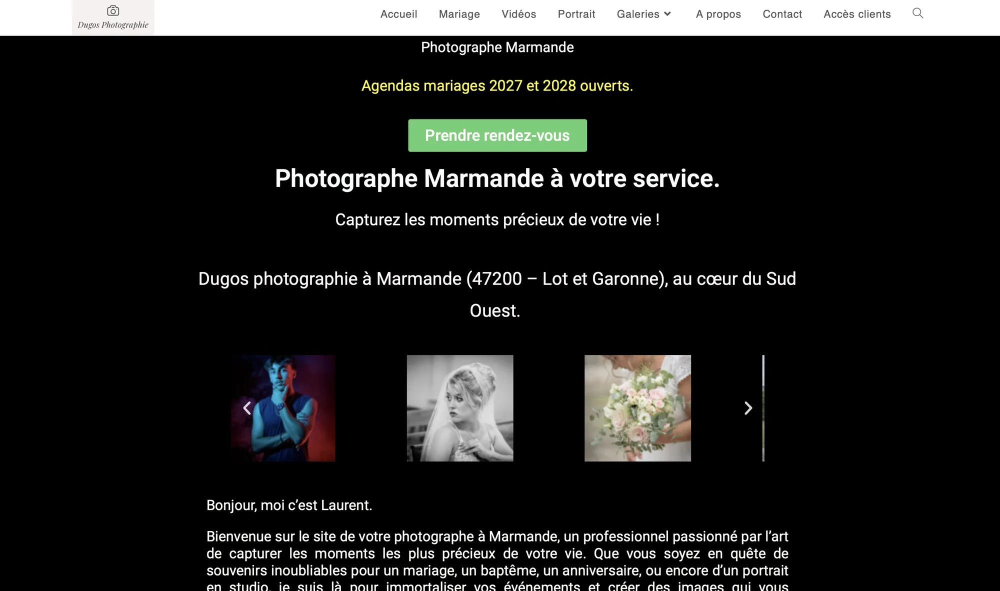
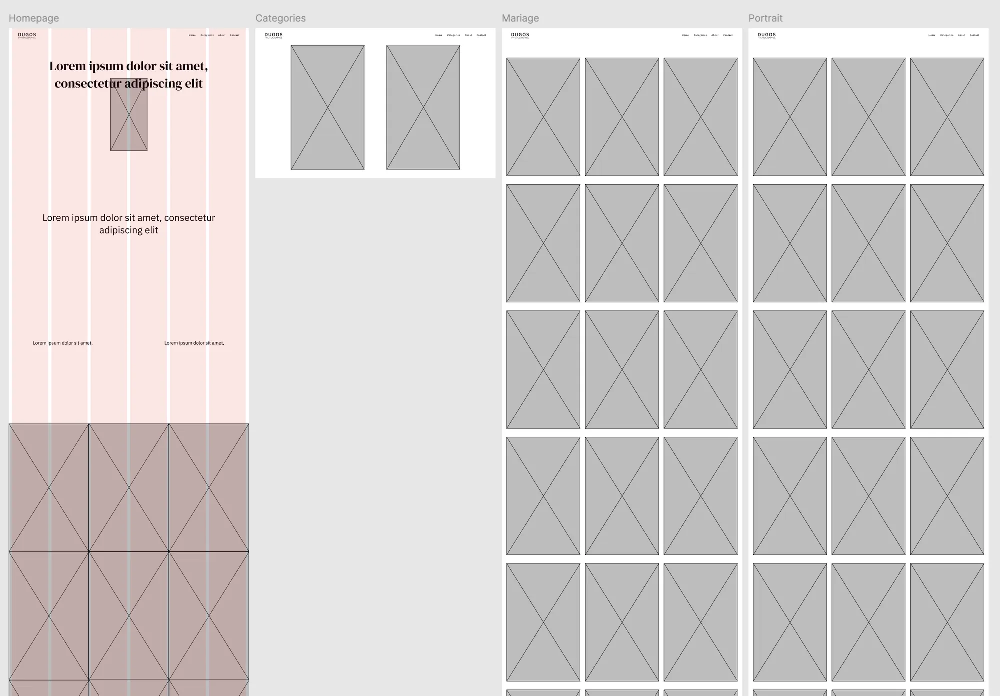
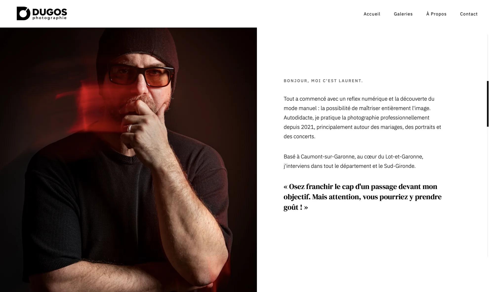

Dugos Photographie
Refonte du site de Dugos Photographie, photographe de mariage et de portrait à Marmande, en 2026. Un site qui existait déjà, refait de A à Z : moodboard, prototype Figma, puis développement avec une équipe d'agents IA que je pilote.
Voir le siteLe projet
Un site qui existait déjà.
Laurent est photographe de mariage et de portrait à Marmande. Il avait monté son site lui-même sur WordPress : fond noir, texte jaune, un bouton vert. Il tenait debout, mais ce n'était ni un site ergonomique ni un site qui convertit, et ce n'est pas son métier de le savoir. C'est là que je me suis positionné. Plutôt que de retoucher l'existant, je l'ai refait de A à Z : la structure des pages, le parcours jusqu'au contact, la direction artistique et le développement. L'ancien site m'a surtout servi de point de départ : tout ce qu'il ne faisait pas pour ses clients, le nouveau devait le faire.

Une direction avant une ligne de code.
J'ai commencé par regarder ce qui se faisait chez les photographes, et j'en ai tiré mes propres moodboards. Puis j'ai posé la structure dans Figma : les wireframes de l'accueil, de la page des catégories et des deux galeries, Mariage et Portrait, et un prototype pour tester le parcours. À la sortie, j'avais une direction artistique, un sens dans lequel aller. Les typographies ont été choisies pour son offre et pour la personne qu'il est : un photographe, ce n'est pas que des photos, c'est aussi quelqu'un qu'on a en face de soi pendant tout un événement. Le site devait montrer les deux.

Sobre, dans le ton de ses photos.
Pour le développement, j'ai travaillé dans cmux avec Claude Code : je cadre une équipe d'agents IA, un rôle par panneau, et je la guide page après page, à partir du prototype. L'accueil défile en douceur, avec les parallaxes et les animations que je voulais mettre en avant. Le site est sobre, pas premium, dans le ton de ses photos. Le book enchaîne les mariages et les portraits à la suite, parce que c'est ce qu'un futur client vient voir. La page About dit qui est Laurent et comment il travaille, c'est important pour un photographe. Et des CTA, à chaque étape, mènent à la page contact, où la demande se fait en choisissant d'abord la prestation.

Ce que j'en retiens.
Un photographe, ce n'est pas que des photos : c'est aussi la personne.